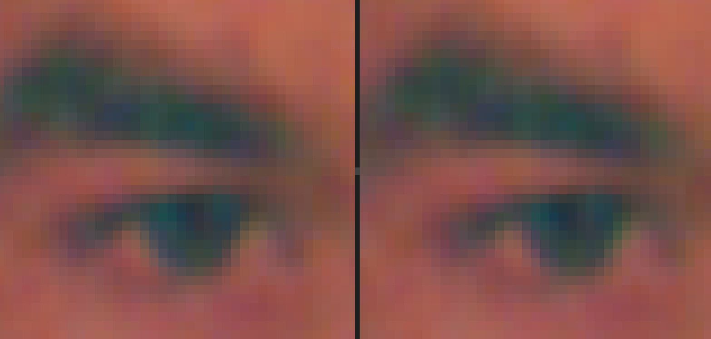
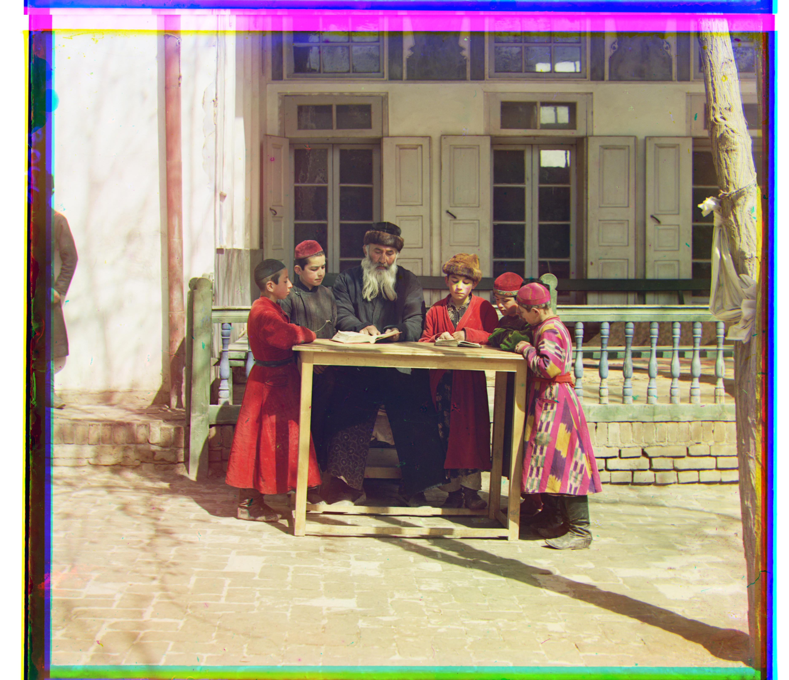
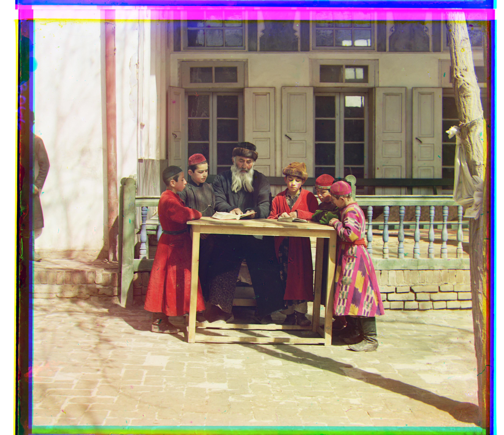
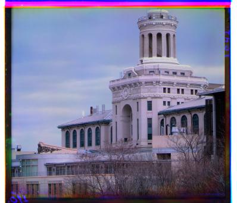
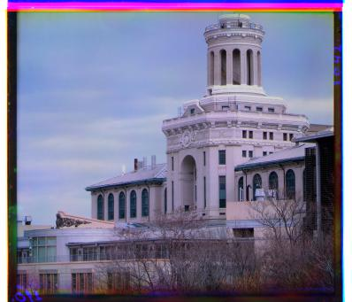

January 2022
Aligning and compositing images of the Prokudin-Gorskii photo collection
Sergei Milkhailovich Prokudin-Gorskii (1863-1944) was a Russian chemist and photographer, best known for his cutting-edge methods of color photography. On trips sponsored by Tsar Nicholas II, Prokudin-Gorskii documented, with thousands of images, the Russian empire between the years 1905 and 1915. The resulting collection was purchased by the US Library of Congress in 1948.
Prokudin-Gorskii's method involved capturing three separate negatives, each with a different filter, either red, blue, or green. This set of negatives can be combined to produce a full color image.
Aligning an image
Images can be downloaded from the collection in the form shown; there are three sections correspond to blue, green, and red filters respectively from top to bottom.

My task is to align these three color channels. Simply dividing the image in three equal parts and overlaying them results in a misaligned, fuzzy mess.

Clearly, we need to align these channels. We'll search for the correct allignment by leaving the blue channel alone and trying to match the red and green channels on top of it. A candidate alignment for the red or green channel is just a translation some number of pixels in each direction, horizontal and vertical. We need a metric for comparing various candidate alignments.
Aligning an image
Image alignment metrics like sum of square differences or normalized cross correlation are a tempting starting point, though some colors in the final image may have drastically different brightness values across the three color channels. For this reason, those metrics rely on brightness variability throughout the image. For now I'll try a metric that I expect will apply better to this problem. Consider the difference between a pixel and its neighboring pixel to the right. For patches of pixels in the colorized image that have consistent color, this value will be similar (low) across all three channels. This may hold true even when there are changes in lighting. Therefore, my initial metric for the alignment will be the sum of square differences in these neighboring pixel differences.
That is, if r and b are two dimensional arrays of brightness values, each for a different color channel,
I propose that
I'll compute these differences for both vertical neighbors and horiztonal neighbors, adding both to the sum, as shown in the expression above. Here is a Python implementation of the described algorithm.
Here's what happens when we try all translations of distance at most 5% of the image's longer side. The metric described above is minimized by the following alignment.

Speeding up the algorithm
As described so far, this alignment algorithm is quite slow even for small images (~300px). For larger images (~3000px), it runs for minutes before I give up and move on. To make it faster, let's try a coarse to fine search. An image scaled down to small size requires examining many fewer candidate alignments since each pixel is a larger proportion of the image. Now, we try scaling images down to just 60px side length on their shorter side, performing the search, and then inching the image back towards the full scale. At each step in between, we only bother searching within the pixels corresponding to the previous solution plus or minus a bit. Here is a Python implementation of the course to fine search. As seen, I played around with some parameters to minimize how much of the search space we consider at each step, landing on values that worked quickly but accurately on all the images in the dataset. Stepping up the scaling factor by 3/4 each time seemed based on limited testing to give a nice balance between search space size and number of searches.
Now we can start to align higher resolution images in seconds instead of minutes.
Patches
Finally, we make the observation that for a sufficiently complicated image, aligning the whole image isn't necessary. Instead, a small patch of the image can be aligned, and the corresponding translations can be used for the whole image. This last observation really depends on an image having sufficient information throughout the image (or at least in the sampled patch). For this dataset, I found that taking just the middle 20% of the image was sufficient for aligning all images. Here's the corresponding function in Python.At this point, the algorithm can align all the images in the assignment dataset in under a minute. It is interesting to think about what the "best" alignment really is. What metric is best? One can imagine the images being taken on a half pixel offset from each other such that there are two, equally correct alignments. Images like the one shown made me wonder whether the best alignment could ever be agreed on. As you can see, a difference in one pixel, on one channel, for a sufficiently high resolution image gives very similar results.
That said, I am happy with my metric, and with any tweaking that I do by hand, I can't seem to get any more satisfied by an alignment than I do with the algorithm's alignment. I do look forward to seeing classmates' alignment metrics.
Metric Comparison
Up until this point, I've been interested in making the algorithm faster. I've tweaked the parameters a bit (how coarse we go and how quicly we go back to the full image), and I've found that small patches of the original image are always sufficient for finding the alignment. Out of curiosity, I at this point plugged in the old basic image alignment metric, the sum of differences squared. I noticed that while that metric gets the correct alignment for a full patch size, it would not perform as consistently when patch size is reduced. This was a nice bit of evidence that my neighboring pixel differences metric works well, sometimes better than the naive version.
| Metric, Patch Size | Images Aligned |
|---|---|
| Sum of Differences Squared, 100% | 17/17 |
| Neighboring Pixel Differences, 100% | 17/17 |
| Sum of Differences Squared, 20% | 15/17 |
| Neighboring Pixel Differences, 20% | 17/17 |


 

 

To change the images further?
Frankly I don't want to do too much with these images. I find the way they look to be compelling on their own (including the funny edges) because it all says something about the history. I do recognize at least that the funky edges are in part an artifact of my using the "numpy.roll()" function. For this reason, I concluded by removing the border in each dimension only as far as the channels were translated. That is, I kept as much of the correctly aligned image as possible, which importantly does leave some funny looking edges from the glass panes still. I like them - quite a bit.

I enjoyed this project. It is rewarding to see the images improve as you work, and it was fun to experiment with various alignment metrics. These are some pretty interesting historic images, and it was great to produce my own version of them.
Sources
[1] Assignment from Professor Pless
[2] Wikipedia entry on Prokudin-Gorskii